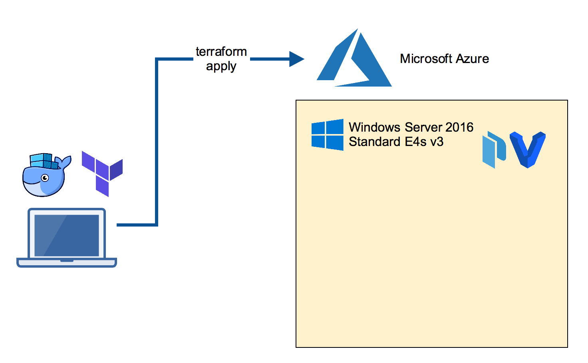
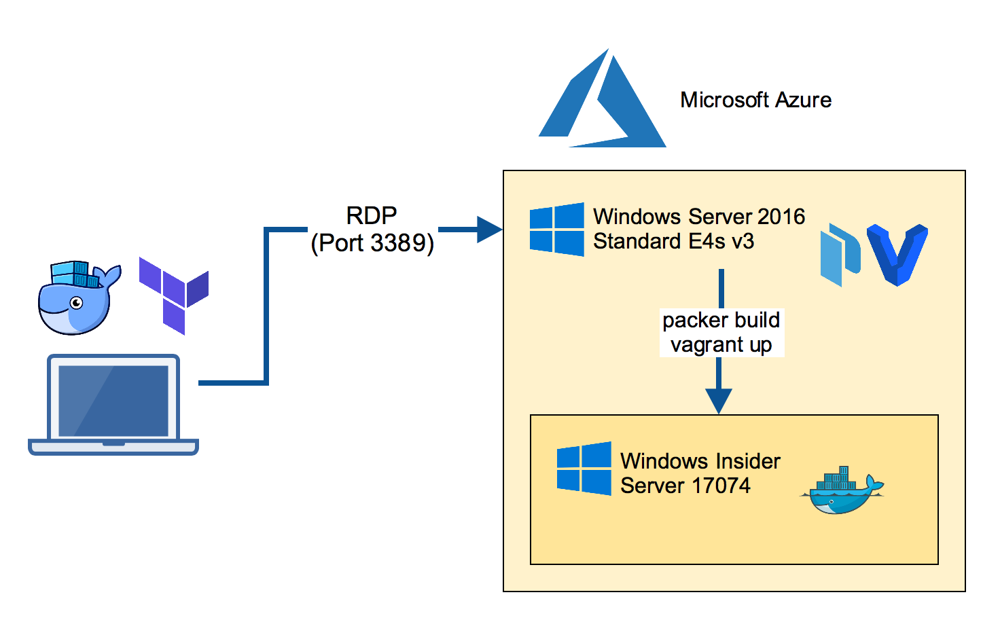
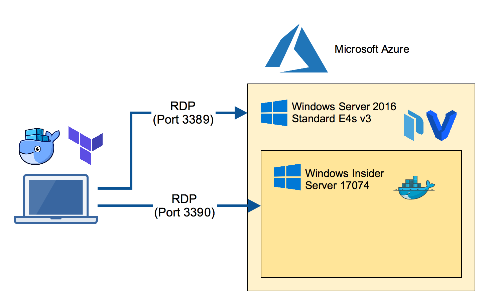
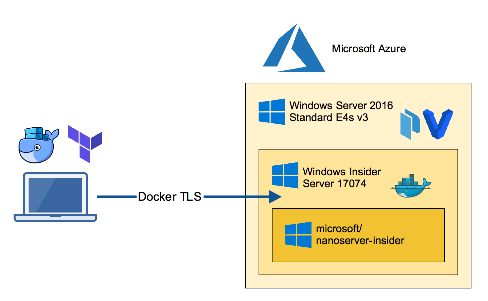

There may be different ways to run the Windows Insider Server Preview builds in Azure. Here's my approach to run a Windows Docker engine with the latest Insider build.
Build the Azure VM
On your local machine clone the packer-windows repo which has a Terraform template to build an Azure VM. The template chooses a V3 machine which is able to run nested VM's.

You need Terraform on your local machine which can be installed with a package manager.
Mac:
brew install terraform
Windows:
choco install terraform
Now clone the GitHub repo and go to the template.
git clone https://github.com/StefanScherer/packer-windows
cd packer-windows/nested/terraform
Adjust the variables.tf file with resource group name, account name and password, region and other things. You also need some information for Terraform to create resources in your Azure account. Please read the Azure Provider documentation for details how to obtain these values.
export ARM_SUBSCRIPTION_ID="uuid"
export ARM_CLIENT_ID="uuid"
export ARM_CLIENT_SECRET="uuid"
export ARM_TENANT_ID="uuid"
terraform apply
This command will take some minutes until the VM is up and running. It also runs a provision script to install further tools for you.
RDP into the Packer builder VM
Now log into the Azure VM with a RDP client. This VM has Hyper-V installed as well as Packer and Vagrant, the tools we will use next.

Build the Insider VM
The next step is to build the Windows Insider Server VM. We will use Packer for the task. This produces a Vagrant box file that can be re-used locally on a Windows 10 machine.
Clone the packer-windows repo and run the Packer build with the manually downloaded Insider ISO file.
git clone https://github.com/StefanScherer/packer-windows
cd packer-windows
packer build --only=hyperv-iso --var iso_url=~/Downloads/Windows_InsiderPreview_Server_2_17074.iso windows_server_insider_docker.json
This command will take some minutes as it also downloads the Insider Docker images to have them cached when you start a new VM.
Add the box file so it can be used by Vagrant.
vagrant box add windows_server_insider_docker windows_server_insider_docker_hyperv.box
Boot the Insider VM
Now we're using Vagrant to boot the Insider VM. I'll use my windows-docker-machine Vagrant template which I also use locally on a Mac or Windows 10 laptop.
git clone https://github.com/StefanScherer/windows-docker-machine
cd windows-docker-machine
vagrant plugin install vagrant-reload
vagrant up --provider hyperv insider
This will spin up a VM and creates TLS certificates for the Docker engine running in the Windows Insider Server VM.
You could use it from the Azure VM, but we want to make the nested VM reachable from our laptop.
Now retrieve the IP address of this nested VM to add some port mappings so we can access the nested VM from our local machine.
vagrant ssh-config
Use the IP address shown for the next commands, eg. 192.168.0.10
netsh interface portproxy add v4tov4 listenport=2376 listenaddress=0.0.0.0 connectport=2376 connectaddress=192.168.0.10
netsh interface portproxy add v4tov4 listenport=9000 listenaddress=0.0.0.0 connectport=9000 connectaddress=192.168.0.10
netsh interface portproxy add v4tov4 listenport=3390 listenaddress=0.0.0.0 connectport=3389 connectaddress=192.168.0.10
Create Docker TLS for external use
As we want to access this Docker engine from our local laptop we have to re-create the TLS certs with the FQDN of the Azure VM.

Now RDP into the nested VM through port 3390 from your laptop.
You will see a CMD terminal. Run powershell to enter a PowerShell terminal.
Run the create-machine.ps1 provision script again with the IP address and the FQDN of the Azure VM. Also specify the path of your local home directory (in my case -machineHome /Users/stefan) to make the docker-machine configuration work.
C:\Users\demo\insider-docker-machine\scripts\create-machine.ps1 -machineHome /Users/stefan -machineName az-insider -machineIp 1.2.3.4 -machineFqdn az-insider-01.westeurope.cloudapp.azure.com
Run Docker containers
You can copy the generated TLS certificates from the nested VM through the RDP session back to your home directory in $HOME/.docker/machine/machines folder.

Then you can easily switch the Docker environment variables locally on your
Mac:
eval $(docker-machine env az-insider)
or Windows:
docker-machine env az-insider | iex
Now you should be able to run Docker commands like
docker images
docker run -it microsoft/nanoserver-insider cmd
Conclusion
We have used a lot of tools to create this setup. If you do this only once it seems to be more step than needed. But keep in mind the Insider builds are shipped regularly so you will do some steps again and again.
To repeat some of these steps tools like Packer and Vagrant can help you go faster building VM's as Docker helps you go faster to ship your apps.
- Packer helps you repeat building a VM from new ISO.
- Vagrant helps you repeat booting fresh VMs. Destroy early and often. Rebuild is cheap.
- Docker helps you repeat creating and running applications.
If you have another approach to run Insider builds in Azure please let me know. I love to hear your story. Please use the comments below if you have questions or want to share your setup.
If you liked this blog post please share it with your friends. You can follow me on Twitter @stefscherer to stay updated with Windows containers.